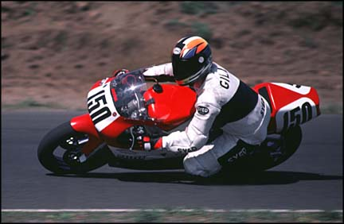

Kory Gill's Racing Resume

Sponsors, if you like what you see, please contact me.
2000 PLANS
- Compete in 250GP class with AMA.
- Compete in 250GP class with WMRRA at selected events
- Compete in Formula II class with WMRRA at selected events
- Compete in 250GP class with OMRRA at selected events
SPONSORSHIP PROPOSAL
I am seeking sponsorship for the 2000 season in the form of product/equipment
contributions, and/or financial contributions. My racing history shows my ability to be
competitive at multiple tracks for entire seasons. My plans are to compete at WMRRA,
OMRRA, and AMA race day events which means more exposure for my sponsors! My more
successful race weekends have generated media exposure in Road Racing publications as well
as Club-level newsletters which are read by racers and non-racers alike. I
always promote my sponsors and recommend their products because I would not use
them if they were not the best products on the market!
In return for your sponsorship, I will provide the following promotional components:
- Product banner displays and/or service referrals.
- Product literature and/or business card displays.
- Emblem display on race bike, leathers, & transport vehicles.
- Trophy award promotionals.
- Road Racing World & Motorcycle Technology media coverage.
- Regular updates and racing results.
- Complete racing season results and product performance feedback.
As you can see from the photo above, I am serious about racing. I present a
professional image, and I have sufficient space in my pit area and transport vehicles for
banners, signs, et cetera. I want to promote racing, my sponsor's products and services,
and have fun doing it. Together we can make it happen!
1999 SUMMARY/HIGHLIGHTS
Competed with a Yamaha TZ250.
- Finished 1st Place overall in 250GP with WMRRA
- Finished 2nd Place overall in 250GP with OMRRA.
1998 SUMMARY/HIGHLIGHTS
Competed with a Yamaha TZ250.
- Finished 2nd Place overall in 250GP with OMRRA
- Finished 2nd Place overall in Formula II with WMRRA.
- Finished 3rd Place overall in 250GP with WMRRA.
- Finished 1st 6 times, 2nd 2 times, and 3rd 3 times!
- Competed in 2 AMA National races and finished 26th and 23rd.
1997 SUMMARY/HIGHLIGHTS
Competed with a Honda CBR900RR.
- Finished 5th Place overall in Formula Unlimited with WMRRA.
- Finished 4th Place overall in Heavyweight Super Teams with WMRRA.
Purchased and competed with a Yamaha TZ250.
- Finished in 2nd Place in final 250GP race with WMRRA.
- Received a total of 6 trophies and 2 cash purses during season.
1996 SUMMARY/HIGHLIGHTS
Competed with a Honda CBR900RR.
- Finished 6th place overall in Formula Unlimited with WMRRA.
- Finished 6th place overall in Open Super Sport with OMRRA.
- Finished 8th place overall in Open Super Sport with WMRRA.
- Finished 9th place overall in Open Super Bike with OMRRA.
1995 SUMMARY/HIGHLIGHTS
Competed with a Kawasaki EX250 Ninja.
- Finished 3rd place overall in Ultra Lightweight Super Bike class with OMRRA.
- Finished 3rd place overall in Formula III class with WMRRA.
Engine suffered a catastrophic failure. Purchased a Honda CBR900RR.
- Competed in every remaining race finishing mid-pack by season's end.
1994 SUMMARY/HIGHLIGHTS
Competed with a Kawasaki EX250 Ninja.
- Graduated Novice.
- Finished 7th place overall in the Ultra Lightweight Super Bike class at OMRRA.
- Finished 10th place overall in the Formula III class at WMRRA where I was competing
against 125 GP bikes.
BACKGROUND/EDUCATION
- Software Design Engineer in the Consumer Platforms Division at Microsoft Corporation,
Redmond, WA
- BS Computer Science, minor Mathematics, South Dakota School of Mines and Technology
RACE LICENSES AND AFFILIATIONS
- WMRRA #150 (Washington Motorcycle Road Racing Association), Since 1994
- OMRRA #150 (Oregon Motorcycle Road Racing Association), Since 1994
- AMA #150 Pro, Member #681796 Since 1992
- AFM #150R (American Federation of Motorcyclists), Since 1996
Sponsors, if you like what you see, please contact me.
Back to Kory's main page